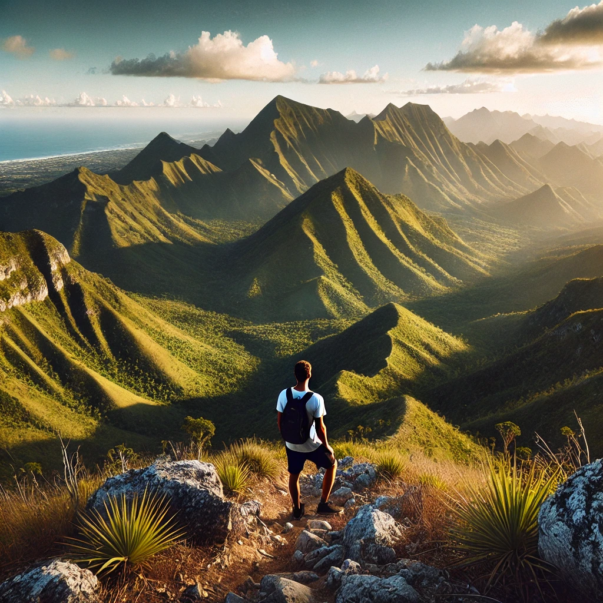
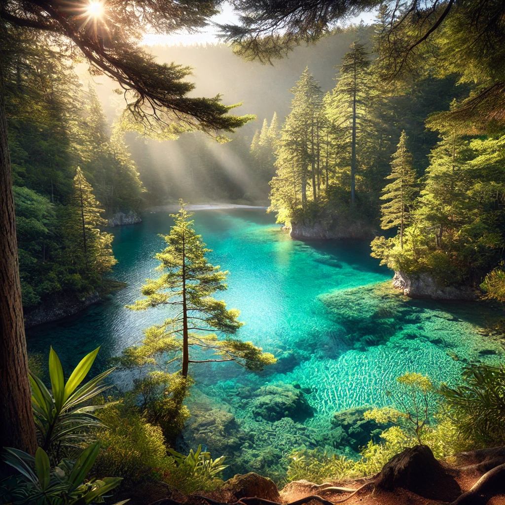
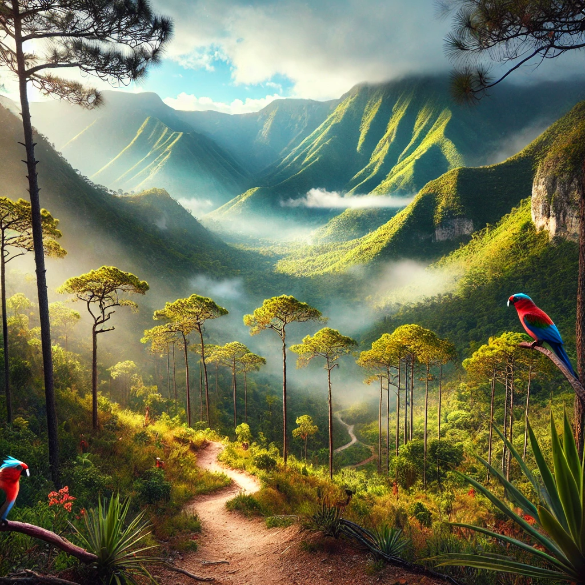
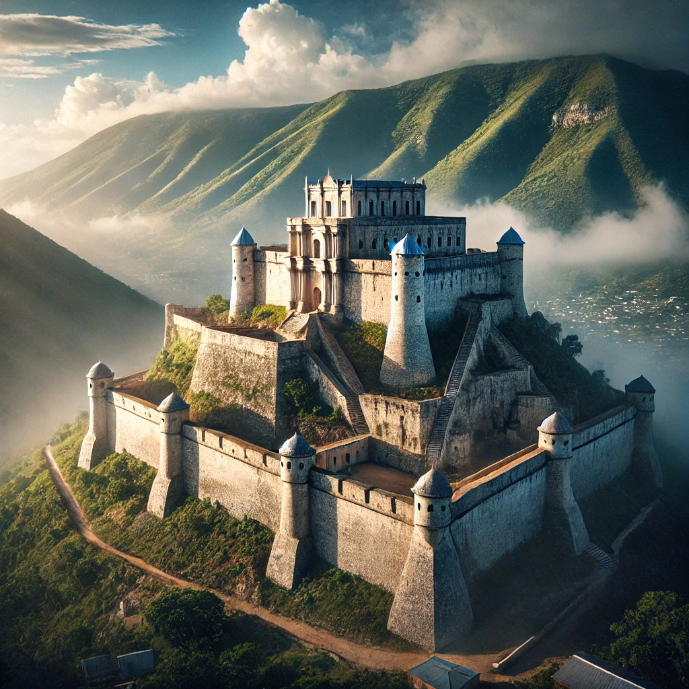
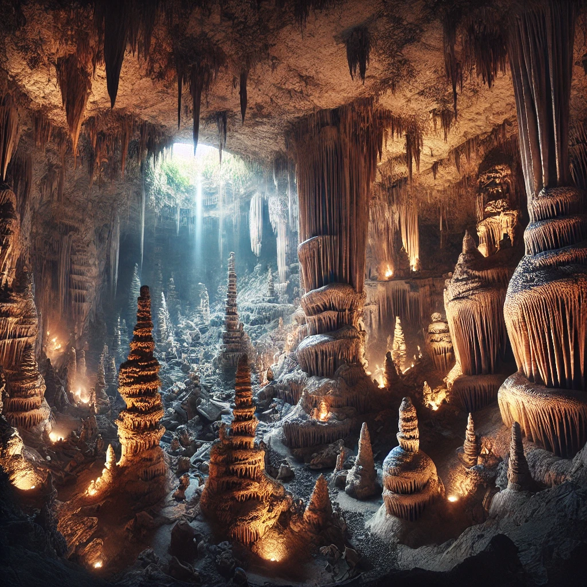

Les Plages Cachées d'Haïti

Haïti regorge de plages paradisiaques encore méconnues. Parmi elles, Ti Mouillage et Belle-Anse sont des joyaux naturels offrant des eaux cristallines et des paysages à couper le souffle. Ces plages, loin de l'agitation touristique, permettent aux visiteurs de profiter d'un cadre paisible, où le sable doré s'étend à perte de vue et où la mer dévoile un camaïeu de bleus. La biodiversité sous-marine est également impressionnante, attirant les amateurs de plongée et de snorkeling à la découverte de récifs coralliens fascinants.
Les Chutes d'Eau Spectaculaires

Les cascades d’Haïti comptent parmi les merveilles naturelles les plus impressionnantes du pays. Saut-Mathurine, située dans le département du Sud, est la plus grande cascade d'Haïti, offrant un spectacle grandiose avec ses eaux vives se jetant dans un bassin naturel. De nombreux visiteurs viennent s'y baigner et profiter de la fraîcheur qu’offre cette chute d’eau entourée d’une végétation luxuriante. Plus au nord, Saut d’Eau est un autre site d’exception, connu non seulement pour sa beauté naturelle mais aussi pour sa signification spirituelle, attirant chaque année des pèlerins venus y effectuer des rituels et prières.
Randonnée en Haïti

Haïti est un pays de montagnes, offrant aux amateurs de randonnée des panoramas à couper le souffle. Le Pic la Selle, point culminant du pays avec ses 2 680 mètres d’altitude, offre une vue imprenable sur toute la région, permettant d’apercevoir la mer et parfois même la République Dominicaine voisine. La montée est exigeante mais récompense les marcheurs avec un paysage spectaculaire et une immersion totale dans la nature. D’autres sommets, comme le Pic Macaya, situé dans le Parc National Macaya, regorgent d’une faune et d’une flore endémiques, constituant un trésor écologique unique dans la Caraïbe.
Le Bassin Bleu : Un Trésor Naturel

Situé près de Jacmel, le Bassin Bleu est une série de piscines naturelles aux eaux turquoise cachées au cœur d’une végétation dense. Accessible après une courte randonnée, ce site enchanteur attire les visiteurs en quête de fraîcheur et de détente. Les chutes qui alimentent ces bassins forment un spectacle magnifique, et le cadre paisible permet de se ressourcer pleinement.
Le Parc National La Visite

Le Parc National La Visite est l’un des espaces protégés les plus importants d’Haïti. Situé dans le massif de la Selle, il abrite une diversité impressionnante d’espèces endémiques. Ses sentiers de randonnée traversent des forêts de pins et offrent des vues imprenables sur les montagnes environnantes, faisant de ce parc un lieu idéal pour les amoureux de la nature et de la biodiversité.
La Citadelle Laferrière : Une Vue Imprenable

Située au sommet d'une montagne du nord d'Haïti, la Citadelle Laferrière est l'un des plus grands forts des Caraïbes. Outre son importance historique, elle offre une vue spectaculaire sur la plaine du Nord et la mer. L’ascension jusqu’à la Citadelle permet de profiter d’un paysage verdoyant et de découvrir les vestiges d’un passé glorieux.
Les Grottes de Marie-Jeanne

Les grottes de Marie-Jeanne, situées à Port-à-Piment, constituent l’un des plus longs réseaux souterrains des Caraïbes. Avec ses vastes galeries et formations rocheuses spectaculaires, ce site naturel est une véritable merveille géologique. L’exploration de ces grottes permet d’admirer des stalactites et des stalagmites fascinantes.